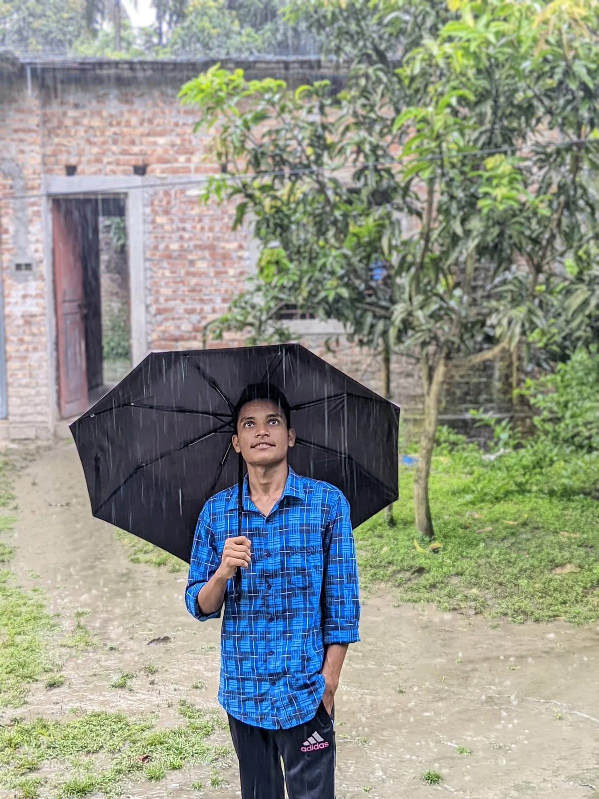
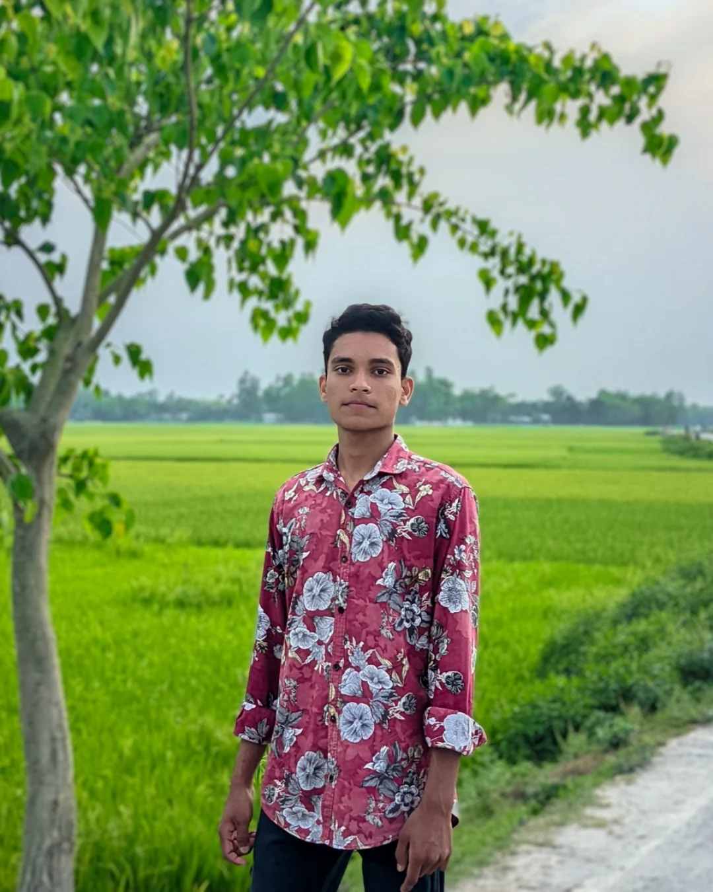
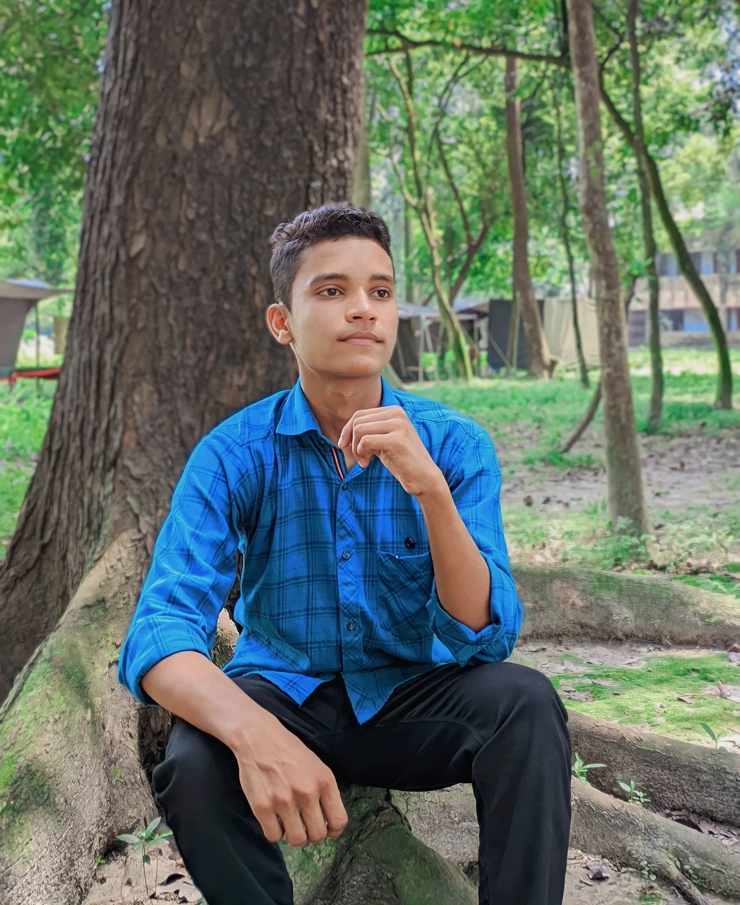
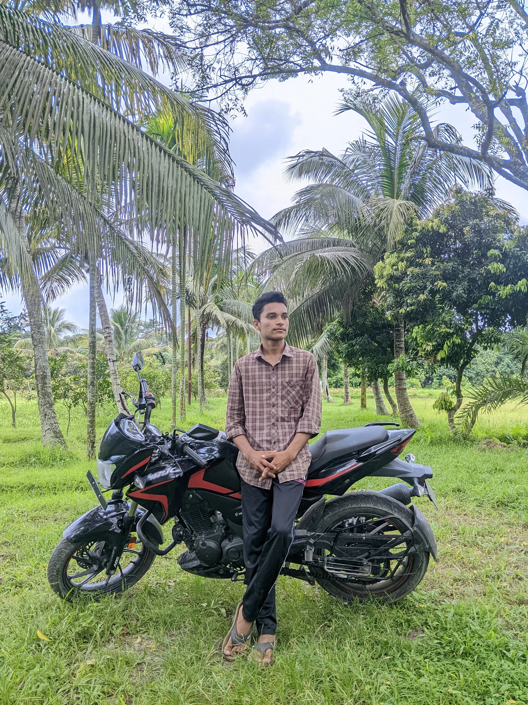
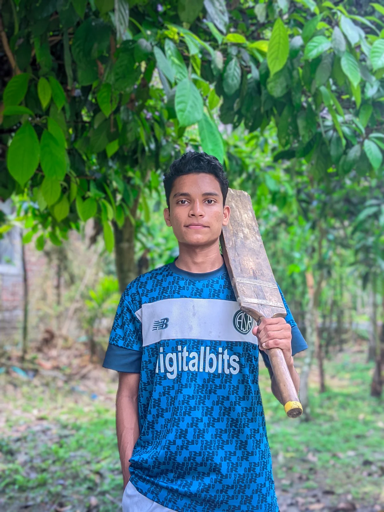

PICTURES / PERSONAL ARCHIVE
A visual
archive.
A collection of portraits, outdoor moments, quiet frames, and places worth remembering. No timeline, no feed — just a small selection of photographs.
SELECTED FRAMES
Moments, kept.
Click any frame to view it larger. Each image is optimized for the web while retaining its original character.

01 / 12
Rainy Day Umbrella Portrait
02 / 12
Mirror Self-Portrait

03 / 12
Floral Shirt in the Green Fields

04 / 12
Portrait Beneath the Tree
05 / 12
Café Evening Portrait
06 / 12
Waterfront Afternoon
07 / 12
Sunlit Portrait

08 / 12
Motorcycle Among the Palms

09 / 12
Blue Jersey in the Greenery
10 / 12
Across the Green Fields
11 / 12
Quiet Stone Wall Portrait
12 / 12
Under the Cloudy Sky
This page is intentionally separate from the main portfolio navigation — a quieter place for the photographs to live.
AFEEMUHAMMODWAFY.COM / PICTURE